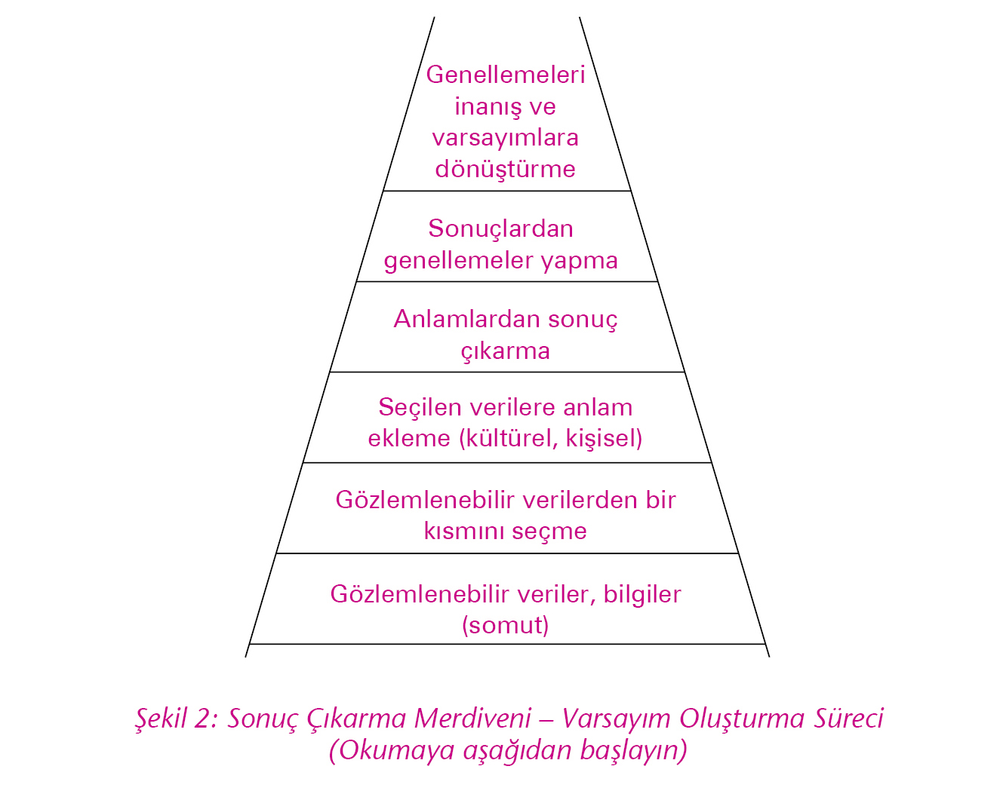
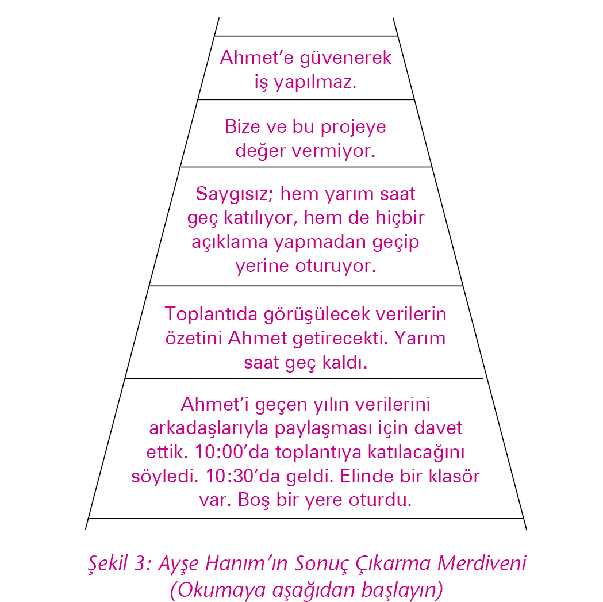

Güler, Rıza, Mehmet, Abdullah, Billur ve Zeki’den oluşan ekip, Emin ve Akın’la birlikte üç günlük programı tamamladılar. Bu üç günün nasıl geçtiğini anlamak için program süresinde yaşananlara ve üzerinde durulan kavramlara bir bakalım.
Birinci gündü. Kaldıkları otelin seminer salonundaki bir masanın etrafında oturmuşlardı. Çalışmaya hazırlardı. Önlerinde Öğrenen Organizasyon’un kavram ve araçlarını anlatan kitaplar vardı.
Programın başında Akın herkesin bu sabah nasıl olduğunu, bu programla ilgili beklenti ve duygularını paylaşmasını istedi.
Zeki, “İyiyim. Umarım bu üç gün sıkıcı geçmez. Bir masanın başında oturup ders dinlemeyeli uzun zaman oldu.”
Rıza, “Ben de iyiyim. Bu programın ve sonrasındaki toplantıların, sorunlarımıza çözüm bulmakta yardımcı olacağını umut ediyorum.”
Güler, “Ben oldukça heyecanlıyım. Öğrenen Organizasyon’ların içeriğini ve bize nasıl yardımcı olacağını merak ediyorum.”
Mehmet, “Bomba gibiyim. Ben eski firmamda çok sayıda seminere katıldım. Tabii ki bu seminerlerin bireysel gelişime çok katkısı oluyor. Bu üç günün bizlere katkısı olacağını düşünüyorum, ancak bu şekilde satışlarımızı artırabilir miyiz, emin değilim. Bekleyip göreceğiz.”
Billur, “Ben biraz yorgunum. Bu üç günün hepimiz için faydalı olmasını diliyorum.”
Abdullah, “Aklım işlerde. Bu üç gün faydalı olmak zorunda. Hepimiz işimizi gücümüzü bıraktık buraya geldik. Öner Bey bu konuya o kadar önem veriyor ki, biz katılabilelim diye bütün yükü üstlendi. Tüm arkadaşların bu durumun bize yüklediği sorumluluğun farkında olması gerek.”
Abdullah’ın son cümlesi üzerine Mehmet’in yüzünde alaycı bir gülümseme belirdi.
Akın, “Evet arkadaşlar buyrun, başlayalım,” dedi.
Çalışmanın bu ilk gününde Öğrenen Organizasyon’un tanımı ve beş disiplininin ilki olan Düşünsel Modeller Disiplini ve araçları üzerinde durdular. Onlarla birlikte bu kavramlara bir göz atalım.
Öğrenen bir organizasyon, arzu ettikleri ortak geleceğe ulaşmak için hem birlikte hem de birey olarak kendilerini sürekli geliştiren bir insan grubudur. Değişimin hızlı, rekabetin acımasız olduğu bir ortamda varolabilmek öğrenme yeteneğimize bağlıdır. Bir kurum veya toplulukta aşağıda açıklanan öğrenme yetersizliklerinin olması, geleceğe dair önemli uyarılardır, değişime uyum sağlayabilme yeteneğinde ciddi sıkıntılar olduğunu gösterir.
1. Pozisyonum Neyse Ben Oyum: Bu yetersizliğin yaşandığı ortamlarda kişiler kendilerini pozisyonlarıyla sınırlandırılmış hissederler. “Yapacaktım ama benim işim değildi, o yapmalıydı, böyle bir sorumluluğum olduğunu bilmiyordum…” gibi açıklamaları sık sık duyarsınız. Pek çok konu ve iş, insanlar sahiplenmediği için çözümsüz kalır ve sonuçlanmaz.
2. Düşman Dışarıda: Bu öğrenme yetersizliğini savunma davranışlarında görürsünüz. Bir sorun olduğunda kişiler, gruplar bir başkasını suçlayarak kendilerini temize çıkartmaya çalışırlar. Suçlu yan masada oturandır, o değilse diğer departman/gruptur, daha da olmadı rakiplerdir, müşteridir, ekonomidir, koşullardır. Durum böyle olunca yaşananlarla ilgili özeleştiri yapılmaz, neyi farklı yapabilirdik diye sorulmaz ve öğrenme gerçekleşmez.
3. Sorumluluk Üstlenme Kuruntusu: Herkesin çok çalıştığı ve yorulduğu, ancak sorunların çözülmek yerine arttığı, bütün koşturmacaya rağmen daha iyiye bir gidişin olmadığı durumlar, bu öğrenme yetersizliğinin göstergesidir. Kimsenin durum değerlendirmesi yapıp sorunların kök nedenine inecek zamanı yoktur. Sorunları hazırlayan nedenler ortaya çıkarılıp giderilmediği için de sorunlar artmaya devam eder ve koşturmaca, yangın söndürme çabaları hızını daha da artırır. Bir işe yaramasa da çaba içinde olmak insanlara sorumluluk aldıkları, ellerinden geleni yaptıkları duygusunu verir.
4. Olaylara Takılıp Kalma: Ağaçlara bakmaktan ormanı görememektir. “Geçen toplantıda benim raporumu eleştirdi, ben de onun raporuna yardım etmiyorum”, “Benimle böyle konuşamaz”, “Bize sormadan değişiklik yapmışlar, bunlara haddini bildirmek gerek” gibi çok sayıda konuşma yapılır ve bu basit olaylar insanları meşgul ederken, büyük resimde nelerin olduğunu, kurum olarak, topluluk olarak nereye gittiğimizi gözden kaçırırız. Bütün bunlar bazen aynı teknede olduğumuzu bile unutmamıza neden olur. Birlikte değil birbirimize karşı bir mücadele vererek gücümüzü ve enerjimizi tüketiriz.
5. Hatalardan Öğrenme Hayali: Aynı hataların sürekli tekrarlanması ya da geçmiş deneyimlerden ve başkalarının yaşadıklarından hiç ders almadan, bedeli çok ağır hatalar yapılması bir başka öğrenme yetersizliğini gösterir. Böyle bir ortamda hatalardan öğrenme kavramı bir hayal haline gelmiştir.
6. Haşlanmış Kurbağa Olmak: Haşlanmış Kurbağa Sendromu, değişimin farkına varmamanın getireceği tehlikeyi anlatan bir benzetmedir. Kurbağayı sıcak suya attığımızı düşünelim. Kurbağa can havliyle sıçrayıp kendini kurtarabilir. Buradaki sıcak su büyük, ani, fark edilebilir değişimdir. Şimdi de kurbağayı oda sıcaklığında suya koyduğumuzu ve suyu ağır ağır ısıttığımızı düşünelim. Kurbağa suyun ısındığını fark etmeyip rehavete düşecek ve su kaynama noktasına geldiğinde kaçmak için geç kalmış olacaktır. Yaşamda değişimlerin büyük bir kısmı suyun ağır ağır ısınması gibi süreç içinde gerçekleşir. Bu süreç içinde rehavete kapılmak ve çok geç olana kadar değişmemek, haşlanmış kurbağa olmak sonucunu getirir. Bu yetersizliğin en önemli göstergesi bir kurumda/toplulukta bireylerin, grupların/departmanların, kurumun/topluluğun sık sık şaşırmasıdır. Sık sık şaşkınlığa düşmek, suyun ısındığını çok geç olana kadar fark etmediğimizin önemli bir göstergesidir.
7. Biz Bir Takımız Aldatmacası: Böyle bir ortamda kişiler, biz bir takımız görüntüsünü bozmamak için bir aradayken gerçek görüşlerini ifade etmezler. Görüş birliği varmış gibi görünür, kararlar alınır ve bu kararlar gerçek görüş birliğiyle alınmadığı için çoğunlukla uygulanmazlar. Gerçek görüşler asıl toplantıların dışında, küçük gruplar halinde farklı ortamlarda paylaşılır.
Öğrenen Organizasyon’u oluşturan beş disiplini hayata geçirmek, yukarıda anlatılan öğrenme yetersizliklerini ortadan kaldırarak Öğrenen Organizasyon olmamızı sağlar. Öğrenen Organizasyon olmak tek seferlik bir çaba değil, sürekli bir yolculuktur.
Düşünsel Modeller: Hayata bakışımızın, varsayım ve inanışlarımızın ilişkilerimiz, karar ve eylemlerimiz üzerindeki etkilerini görebilmek ve bunlar üzerine konuşabilmek ve karşımızdakinin bakış açısını anlayabilmektir.
Kişisel Yetkinlik: Kişisel bir vizyona sahip olmak ve buna ulaşmak için kendimizi sürekli geliştirmektir.
Takım Halinde Öğrenmek: Sosyal ilişki ağlarını genişleterek ustalıklı tartışma, resmin bütününü görme, ortak hedefler oluşturma becerileri geliştirmek, ayrıca kişisel farklılıkların takımı zenginleştirici ve güçlendirici gücünü kullanarak, bireysel sonuçlardan çok daha fazlasını takım olarak elde edebilmektir.
Paylaşılan Vizyon: Ortak bir vizyon, ortak bir hedef etrafında kenetlenmektir.
Sistem Düşüncesi: Resmin bütününü görebilmeyi, yan etkisi fazla, çabuk ya da geçici çözümler yerine, kök nedenlere ve kaldıraç gücü yüksek aksiyonlara odaklanmayı sağlayacak bir düşünme şeklidir.
Düşünsel modelleri, hayatı algılayışımızı etkileyen süzgeçler olarak düşünebiliriz. Yıllar içinde oluşturduğumuz varsayımlarımız, inanışlarımız, önyargılarımız, kabullerimiz düşünsel modellerimizdir. Yaşadıklarımızı, etrafımızda olanları düşünsel modellerimizin süzgecinden geçirerek değerlendirir ve kararlar veririz. Ancak çoğu zaman düşünsel modellerimizin ve onların karar ve eylemlerimiz üzerindeki etkilerinin farkında olmayız. Düşünsel modellerimizi herkes için geçerli ve kesin doğrular olarak kabul etme tehlikesiyle karşılaşabiliriz.
Kendi düşünsel modellerimizin farkında olmadığımızda başkalarının bizden daha farklı düşünsel modelleri olabileceğini kabul edemeyiz. Dolayısıyla aynı olaylar karşısında bizden farklı algılamaları, tepkileri ve eylemleri olmasını anlayamaz, onları yargılarız. Böyle bir durumda iletişim kurmak, birbirini anlamak, bir arada çalışmak ve başarılı iş sonuçları çıkarmak oldukça zorlaşır.
“Konuşurken gözüme bakmayan adam güvenilmezdir.”
“Konuşurken gözüme bakan adam saygısızdır.”
“Kızını okutup da ne olacak, sonra isyankâr olur.”
“Kızını okutmalısın ki, kendi ayakları üzerinde dursun, kendini ezdirmesin.”
“Üretimci değil mi; satıştan ne anlar. Müşteri memnuniyeti umurunda değil.”
“Satışçı değil mi; yapılabilir mi yapılamaz mı diye bakmadan, üretime danışmadan müşteriye sözler verir.”
“Bakımcı, ne olacak, ikide bir makineleri durdurup üretimi aksatacak, yoksa kendini güçsüz hisseder.”
“Daha çok üreteceğiz diye bakım yaptırmazlar, makineler iflas edince de bizi suçlarlar.”
“Kimse beni anlamıyor.”
“Kendimi anlatamıyorum.”
“Çocuk dediğin saygılı, akıllı uslu olur.”
“Çocuk dediğin, hareketli, fıkır fıkır olur.”
“Duygularını göstermek acizliktir.”
“Duygular insanı insan yapar, paylaşılmalıdır.”
Bu liste sonsuza kadar uzatılabilir. Her biri farklı bir düşünsel model. Dolayısıyla her düşünsel modelin yol açacağı davranış da farklı olacaktır. Kendimizin ve başkalarının davranışlarının altında yatan nedenleri anlamak için önce düşünsel modellerimizi anlayabilmeliyiz. İnsanların yetişme şekilleri, eğitimleri ve geçmiş deneyimleri gibi etkenlerin sonucunda oluşan birbirlerinden farklı düşünsel modelleri olabileceğini kabul etmeliyiz.
Birbirimizden farklı düşünsel modellerimizin olması doğaldır, ancak onların farkında olmalı, davranışlarımızı nasıl etkilediklerini görmeli ve gerekirse sorgulayarak değiştirebilmeliyiz. Çünkü bugün bize yardımcı olan bir düşünsel model, yarın sorunlarımızın kaynağı haline gelebilir. Bunu aşağıdaki örnekte açıkça görebiliriz.
Yıllar önce Amerika’nın otomotiv devleri “büyük güzeldir”, “işçinin kol gücü, yöneticinin beyin gücü” gibi düşünsel modellerle çok başarılı oldular. Dünya devi haline geldiler. Çok büyük, bürokratik organizasyonlar kurdular. Japonların “işi en iyi yapan bilir; herkesin beyni, emeği ve yüreğiyle katılımı”, “küçük güzeldir” düşünsel modellerini dikkate almadılar, çünkü çok başarılıydılar. Ancak Japon otomotiv sanayi onlara çok kan kaybettirdikten sonra düşünsel modellerini sorgulamayı ve değişimi başarabildiler.
Düşünsel modelleri doğru mu yoksa yanlış mı diye ele almak yerine, nasıl oluştuğunu, hangi davranışlara yol açtığını anlamaya çalışmalı ve bizi günün ve geleceğin koşulları içinde istediğimiz sonuçlara götürüp götürmediğini sorgulamalıyız.
Düşünsel modellerimizi fark etmek, onları paylaşabilmek, daha yapıcı ve üretken konuşmalar gerçekleştirebilmek için üç temel araç kullanılır:
• Sol Sütun – Sağ Sütun
• Sonuç Çıkarma Merdiveni
• Ustalıklı Tartışma
Bir konuşmada söylediklerimizden ve duyduklarımızdan çok daha fazlası vardır. Konuşurken ve dinlerken bir taraftan da düşünür ve hissederiz. Ancak, bunların hepsini söze döküp paylaşmayız. Sol sütun, konuşurken söylenmeyen düşünce ve duyguları ifade eder. Sağ sütun ise konuşma sırasında söylenenlerden oluşur.
(Aşağıdaki örnekte sol sütunda geçen tüm düşünceler konuşmayı yazana aittir. Karşıdaki kişinin sol sütununu, yani paylaşmadığı duygu ve düşüncelerini bilemeyeceğimiz için –ancak tahmin edebiliriz– yazılmamıştır.)
|
SOL SÜTUN (İfade Edilmeyenler) |
SAĞ SÜTUN (İfade Edilenler) |
|
“Boş boş oturuyor, tembel, düşüncesiz.” |
Ben: Bana yardım eder misin? |
|
“Çok acil olduğu belli değil sanki! Ne zaman yardım istesem kaytarmaya çalışıyor.” |
O: Çok mu acil? |
|
“Bu sefer kaytaramayacaksın. Sana bu işi yaptıracağım.” |
Ben: Evet! |
(Önce sağ sütunu okuyun)
Güler, Rıza, Mehmet, Abdullah, Billur ve Zeki bu aşamada sol sütunun (yani paylaşılmayan duygu ve düşüncelerin) paylaşılmasının gerekli olup olmadığı üzerinde konuştular. Onları dinleyelim.
Abdullah: “Ben sol sütundakileri olduğu gibi söylemek gerektiğine inanıyorum. Ancak karşımdaki her zaman bunu kaldıramıyor.”
Zeki: “Sol sütundakileri her zaman söylemek doğru değil. Yani karşımdakine sen tembelsin, kaytarmaya çalışıyorsun diyerek ne kazanabilirim ki? Nerede susmak gerektiğini bilmeli.”
Billur: “Bence önemli olan, sol sütunu paylaşıp paylaşmamak değil, nasıl paylaştığımız. Düşündüklerimizi insanları kırmadan da söyleyebilmeliyiz. Ben sol sütunumu neredeyse hiç paylaşmam. Birilerini kırmaktan, tepki almaktan korkarım. Ama bu iyi olmuyor. Her şeyden önce içimde çok şey birikiyor. Söyleyemediklerim uykularımı kaçırıyor. Kendimi kötü hissediyorum. Sorun da çözülmeden kalıyor. Ama bunun alternatifinin karşımdakini kırmak olduğunu düşünmüyorum. Eğer kırmadan paylaşmanın bir yolunu bulabilsek, her şey çok daha kolay olurdu.”
Mehmet: “Billur’a katılıyorum. Her şeyin bir yolu yordamı var. Açık sözlü olmak başkalarını kırıp geçirmek haline geliyor. İşin kötüsü bunu bir erdem olarak görmeye başlıyoruz.”
Güler: “Peki biz birbirimize nasıl davranıyoruz?”
Rıza: “Ya sol sütunlarımızı hiç açmıyoruz ya da karşıdakinin canını acıtacak şekilde açıyoruz.”
Billur: “Sizinle sol sütunumu paylaşmak istiyorum. İlk kez, birlikte olmaktan ve sizlerle zaman geçirmekten keyif aldım. Bu sabah üç günü nasıl atlatırız diye düşünüyordum. Şimdi fark ediyorum ki benzer şeyler hissediyoruz.”
Mehmet: “Billur böylece sol sütunun nasıl paylaşılabileceğini bize gösterdi. Ben de benzer şeyler düşünüyordum ama nasıl ifade edeceğimi bilemedim. Aslında utandım. Sol sütunda her zaman olumsuz şeyler olmuyor. Bazen olumlu şeyler de oluyor ve yine paylaşamıyoruz.”
Abdullah: “Olumlu da olsa olumsuz da olsa duygularımızı paylaşmamak konusunda şartlandırılmışız, bunu bir zayıflık olarak algılıyoruz. Oğluma ‘seni seviyorum,’ diyemiyorum. Halbuki onu çok seviyorum, ama istesem de o iki kelimeyi ağzımdan çıkaramıyorum. Aslında bunu şimdi size söylerken de biraz utanıyorum.”
Güler: “Farkında mısınız, uzun bir süredir ilk kez kavga etmeden, birbirimizi dinleyerek ve kendimizi anlatmaya çalışarak konuşuyoruz. Sanki ilk kez birbirimizle gerçekten konuşuyormuşuz gibi hissediyorum. Birlikte çalıştığımız, birlikte bir şirket yönettiğimiz halde şimdiye kadar hiçbir duygumuzu paylaşmamış, birbirimizi yeterince tanıyamamışız.”
Günün geri kalan kısmında “sonuç çıkartma merdiveni” ve “ustalıklı tartışma/nitelikli konuşma” kavramları üzerinde durdular. Onların bundan sonraki konuşmalarını izleyebilmek için biz de bu kavramlara bir göz atalım. Düşünme sürecimizi bir merdiven benzetmesiyle açıklayan sonuç çıkartma merdiveniyle (şekil 2) başlayalım.

Sonuç çıkarma merdiveni, gözlemlenebilir verileri farklı aşamalardan geçirerek varsayım, genelleme ve inanışlarımıza nasıl ulaştığımızı anlatır.
Gözlemlenebilir veriler, hiçbir yorum içermeyen somut verilerdir. Örneğin boyum 1.65 dediğimde bu somut bir veridir. Ancak kısayım ya da uzunum dediğimde bu bir veri olmaktan çıkar, çünkü boyumla ilgili söylediğim, benim içinde bulunduğum ortama göre oluşturduğum bir yorumdur. Bir ülkede uzun boylu olarak kabul edilecek birisi bir diğer ülkede kısa olabilir.
“Ahmet geç geldi,” gözlemlenebilir somut bir veri değildir. “Ahmet toplantı için duyurulan saatten yarım saat sonra geldi,” gözlemlenebilir, somut bir veridir. “Ahmet geç geldi,” benim bu duruma yüklediğim anlamdır. Bazı durumlarda yarım saat, hatta bir saat sonra gelmek geç gelmek olarak algılanmazken, bazı durumlarda kabul edilemez bir kabalık olarak algılanabilir.
Sonuç çıkarma merdivenine yorum yapma, varsayım üretme merdiveni de diyebiliriz. Merdivenin en altında gözlemlenebilir, somut veriler bulunur. Bir adım yukarı çıktığımızda bu verilerin bir kısmını seçeriz. Bir basamak yukarıda ise bu verilere kendimize göre bir anlam ekleriz. Bu anlamlardan varsayım ve genellemelere gider ve karşımızdaki kişiyle ya da içinde bulunduğumuz durumla ilgili sonuçlar çıkarırız. Bu sonuçlar eylemlerimizi belirler.
Ayrıca merdivenin üst basamaklarında ulaştığımız varsayım ve sonuçlar daha sonraki merdivenleri çıkarken seçeceğimiz verileri de belirler.
Merdivenin en altındaki somut veriler aynı olsa da hepimiz merdiveni kendi düşünsel modellerimize göre çıkar, farklı varsayım ve yorumlara ulaşırız. Merdiveni ışık hızıyla çıkar ve üst basamaklara ulaştığımızda varsayım, yorum ve inanışlarımızı herkes için geçerli ve somut veriler olarak algılamaya başlarız.
Varsayım, yorum, genelleme ve inanışlarımız (düşünsel modellerimiz) ile bunları üzerine inşa ettiğimiz verileri birbirinden ayırabilmek, daha farklı düşünebilmemize ve düşündüklerimizi karşımızdakine verilerle net bir şekilde anlatabilmemize yardımcı olur. Merdivenin kaç basamak olduğu önemli değildir. Önemli olan somut veriler ile, onlar üzerine inşa ettiğimiz, yorum ve varsayımlarımızı (düşünsel modellerimizi) birbirinden ayırabilmektir.
Şekil 3 ve şekil 4’te aynı toplantıdaki iki kişinin –Ayşe Hanım’ın ve Mustafa Bey’in– Ahmet’in geç gelmesiyle ilgili düşünme süreçlerini gösteren iki ayrı sonuç çıkarma merdiveni yer almaktadır. Bu örneklerde de görüldüğü gibi, aynı verilere sahip olsak bile bu verilerden farklı bölümlerini seçip farklı anlamlar yükleyip birbirimizden çok farklı düşünceler geliştirebiliriz.
